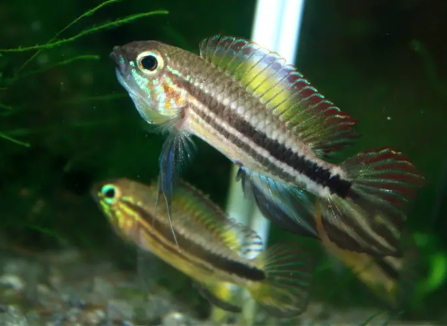
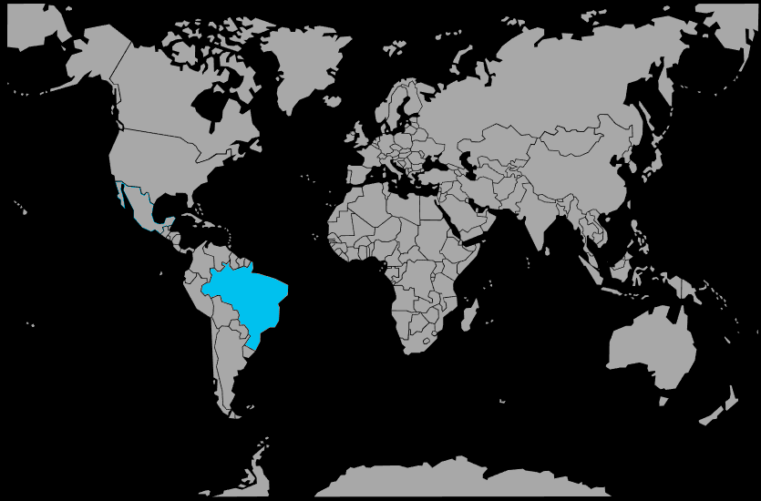

Systématique
- Ordre : Cichliformes
- Famille : Cichlidae
- Genre : Apistogramma
- Espèce : Apistogramma mendezi

Apistogramma mendezi est un cichlidé nain originaire du bassin inférieur du Rio Negro, connu pour sa livrée contrastée, avec une bande latérale sombre, des reflets bleutés sur le corps et des nageoires souvent rouges ou orangées chez les mâles.
Les individus mesurent en moyenne 5 cm, avec des mâles pouvant approcher 7 à 8 cm dans de bonnes conditions, ce qui en fait une espèce de petite taille mais au comportement affirmé, plutôt réservée aux aquariophiles expérimentés.
C’est un poisson territorial vivant naturellement en couple, qui occupe les zones proches du fond et défend activement son antre contre les congénères et autres poissons à comportement similaire.
Il reste toutefois relativement tolérant envers les espèces non territoriales et de pleine eau, à condition de disposer d’un bac bien structuré en territoires visuels, avec de nombreuses cachettes pour limiter le stress et les confrontations.
Mode : pondeur sur substrat caché; la femelle fixe les œufs au plafond d’une cavité (noix de coco, pot, racine creuse) et assure la garde rapprochée de la ponte et des alevins, tandis que le mâle défend la zone de frai plus large.
La reproduction est jugée d’une difficulté moyenne à élevée, nécessitant une eau très douce et acide, une température d’environ 26 °C, une alimentation riche en proies vivantes et une excellente qualité d’eau.
Dimorphisme sexuel : les mâles sont plus grands et plus colorés, avec des nageoires dorsale et caudale nettement allongées et des teintes rouges/orange marquées, tandis que les femelles restent plus petites, plus discrètes, et prennent des couleurs jaunes plus intenses en période de reproduction.
Espérance de vie : environ 4 à 5 ans en captivité, dans un aquarium stable avec une eau adaptée, une nourriture variée et un environnement peu stressant.
L’espèce fréquente des affluents forestiers de type eaux noires du bassin du Rio Negro, caractérisés par une eau très douce, extrêmement acide, de couleur thé sombre, avec un substrat de sable fin couvert de litière de feuilles, racines et débris ligneux.
Répartition

Origine naturelle :
- Amérique du Sud, bassin du Rio Negro, dans le bassin de l’Amazone au nord-ouest du Brésil.
- Localité type : igarapé « Rio Salgado » près de Barcelos, État d’Amazonas, Brésil.
- Populations collectées également plus en amont, autour de Santa Isabel do Rio Negro et São Gabriel da Cachoeira (Brésil).
Apistogramma mendezi est donc une espèce endémique du Brésil, strictement associée au réseau d’affluents d’eaux noires du bas Rio Negro.
Paramètres de maintenance
Température : 23 à 27 °C.
pH : 4,2 à 5,8, eau très acide.
GH : 1 à 3 °dGH, eau extrêmement douce.
Courant : faible, avec une filtration douce sur tourbe, ajout de feuilles mortes et fruits d’aulne pour reproduire l’eau noire très peu minéralisée et stable.
Volume conseillé : au minimum 60 à 80 L pour un couple, avec un sol sableux, de nombreuses racines, grottes et zones ombragées; davantage de volume est recommandé si l’on maintient plusieurs individus.
Régime alimentaire
Régime : omnivore à forte tendance carnivore; dans la nature, l’espèce se nourrit de petits invertébrés benthiques, larves d’insectes, micro-crustacés et autres proies animales proches du fond.
En aquarium, il est recommandé de proposer régulièrement des proies vivantes et congelées de petite taille (artémias, daphnies, vers de vase, microvers), complétées par des granulés et paillettes protéinés de bonne qualité.
Une alimentation variée et riche, distribuée en petites quantités plusieurs fois par jour, améliore la coloration, la vitalité et la réussite des reproductions, tout en limitant les risques de pollution dans les petits volumes.